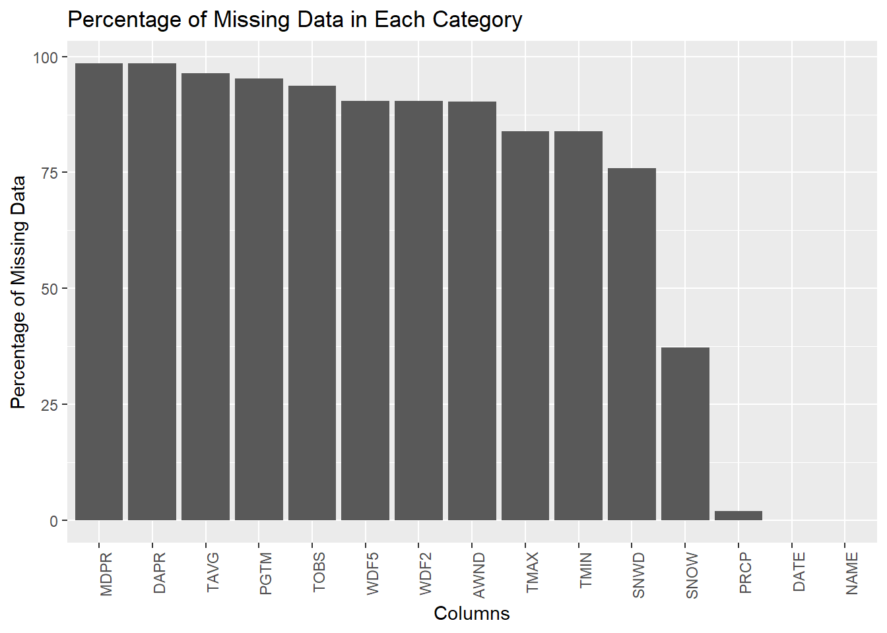
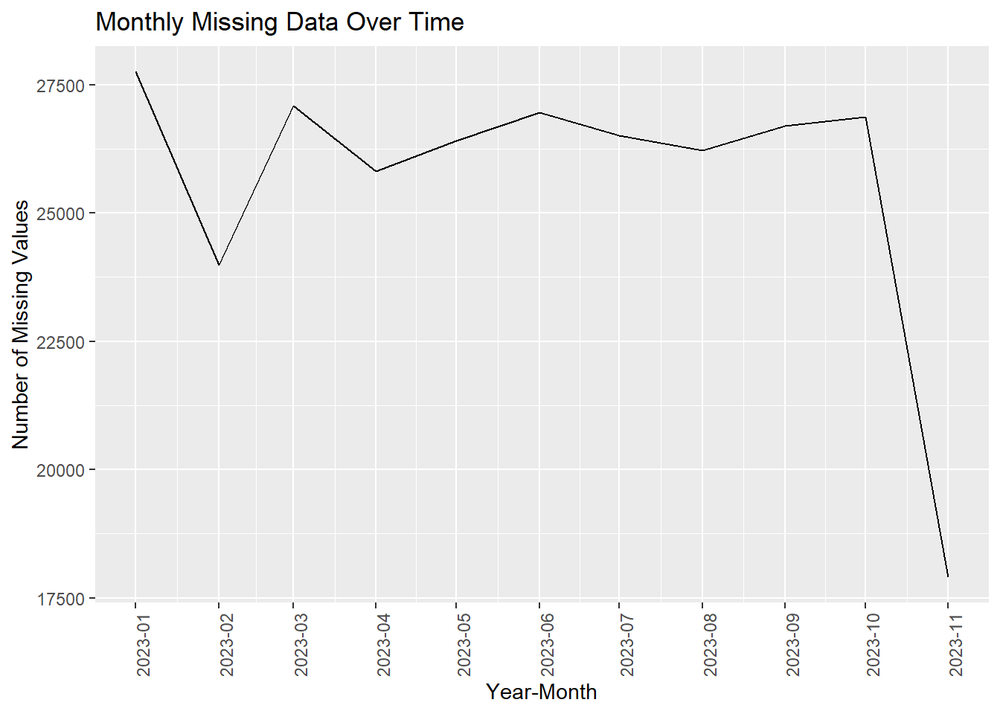

Code
library(lubridate)
library(ggplot2)
library(dplyr)
library(tidyr)For our research project, we choose to use Global Historical Climatology Network (GHCN)-Daily Dataset. It is a composite dataset comprising climate records from numerous sources worldwide. These records are merged and subjected to quality assurance reviews. The dataset is maintained by the National Oceanic and Atmospheric Administration (NOAA).
The data we get from NOAA data source is in csv format. The data is distributed typically with one row per observation, indicating one observation per day. We choose to use the date range between 2023-01-01 to 2023-11-27 for analysis of the most current trend in atmosphere. Updates of the dataset are made in either several days or a week, ensuring a near-real-time data feed.
For the coverage of the dataset, it includes over 40 meteorological elements such as temperature extremes, precipitation, wind speed, and direction. Within our choice of range, it includes 312 stations for observations, which allows for later analysis on geographical comparisons.
Potential issues might include varying data quality and completeness across stations and time periods. For our purpose of research, there does exist some missing data in some of the targeted columns, and therefore needs further filtering and processes to deal with.
For importing data, we choose to import the csv file we got from the NOAA source into R using standard data reading functions like read.csv().
Data Link: https://www.ncei.noaa.gov/cdo-web/datasets/GHCND/locations/CITY:US360019/detail
Our dataset, encompassing over 40 diverse meteorological elements such as temperature extremes, precipitation, wind speed, and direction, offers a comprehensive platform for examining the interactions between these various weather components. Specifically, we aim to delve into how wind conditions correlate with patterns of precipitation and temperature changes. This exploration is expected to yield insights into the complex dynamics that govern weather systems.
Moreover, the inclusion of data from 312 observation stations across New York enhances the depth of our study by enabling regional comparisons. This aspect is particularly valuable as it allows us to analyze how precipitation trends and wind patterns differ across various locations, thereby providing a more nuanced understanding of regional climatic behaviors.
Additionally, the dataset’s up-to-date time series data is crucial for our investigation into the temporal variations and trends of temperature and precipitation. By analyzing this data, we can uncover how these patterns evolve over the course of the year, offering a window into the seasonal shifts and long-term trends in weather conditions. Overall, this dataset serves as a vital tool in our quest to unravel the intricate relationships between precipitation, temperature, and wind and their implications on a regional and temporal scale.
library(lubridate)
library(ggplot2)
library(dplyr)
library(tidyr)#Data Cleaning
# rawdata <- read.csv("C:\\Users\\dongqi\\NY_wind_percip_raw.csv")
rawdata <- read.csv("C:\\Users\\Qi Liu\\Desktop\\STAT 5702 EDAV\\Final_Project\\NewYorkWindPerc\\NY_wind_percip_raw.csv")
#olnames(rawdata)
#Only keeping columns associated with wind, precipitation, and temperature.
data <- rawdata %>% select("TAVG", "TMAX", "TMIN", "TOBS", "DAPR", "MDPR", "PRCP", "SNOW", "SNWD", "AWND", "PGTM", "WDF2", "WDF5", "DATE","NAME")#Missing value analysis
# Counting missing values in each column
missing_values <- sapply(data, function(x) sum(is.na(x)))
missing_values TAVG TMAX TMIN TOBS DAPR MDPR PRCP SNOW SNWD AWND PGTM WDF2 WDF5
26259 22847 22845 25506 26815 26818 526 10133 20659 24588 25933 24636 24638
DATE NAME
0 0 # Calculating the percentage of missing values in each column
total_rows <- nrow(data)
missing_percentage <- sapply(data, function(x) sum(is.na(x)) / total_rows * 100)
# Creating a data frame for plotting
missing_percentage_df <- data.frame(Column = names(missing_percentage), MissingPercentage = missing_percentage)
missing_percentage_df <- missing_percentage_df[order(-missing_percentage_df$MissingPercentage),]#Missing Data Bar Chart
ggplot(missing_percentage_df, aes(x = reorder(Column, -MissingPercentage), y = MissingPercentage)) +
geom_bar(stat = "identity") +
theme(axis.text.x = element_text(angle = 90, hjust = 1)) +
xlab("Columns") +
ylab("Percentage of Missing Data") +
ggtitle("Percentage of Missing Data in Each Category")
In our comprehensive review of the dataset, it’s evident that it is markedly sparse, with a substantial proportion of missing values across various features. Notably, the majority of the features exhibit more than 80% missing data. Exceptions to this trend include key weather parameters such as maximum temperature, minimum temperature, snow depth, snowfall, and precipitation, which maintain more complete records.
# Convert 'DATE' column to Date type
data$DATE <- as.Date(data$DATE, "%Y/%m/%d")
# Extracting the year and month and converting to Date
data$YearMonth <- as.Date(paste(year(data$DATE), month(data$DATE), "01", sep = "-"), "%Y-%m-%d")
# Reshaping the data to long format
data_long <- gather(data, key = "Category", value = "Value", -DATE, -YearMonth)
# Counting missing values by month
missing_by_month <- aggregate(is.na(data_long$Value) ~ data_long$YearMonth, data = data_long, sum)
names(missing_by_month) <- c("YearMonth", "MissingValues")
# Time series plot aggregated by month
ggplot(missing_by_month, aes(x = YearMonth, y = MissingValues)) +
geom_line() +
scale_x_date(date_breaks = "1 month", date_labels = "%Y-%m") +
theme(axis.text.x = element_text(angle = 90, hjust = 1)) +
xlab("Year-Month") +
ylab("Number of Missing Values") +
ggtitle("Monthly Missing Data Over Time")
Our analysis, particularly the monthly overview of missing values throughout 2023, indicates a consistent pattern of data absence, excluding November. We’ve discounted November’s data in our analysis due to incomplete data upload. A notable deviation from this trend appears in February, where there’s a marked decrease in missing values. The reasons for this anomaly could be manifold, including possible changes in data collection protocols or environmental factors impacting data availability.
#Percentage of missing data for each city
data_long <- gather(data, key = "Category", value = "Value", -NAME)Warning: attributes are not identical across measure variables; they will be
dropped# Calculating the total number of missing values for each city
missing_by_city <- data_long %>%
group_by(NAME) %>%
summarise(TotalMissing = sum(is.na(Value))) %>%
arrange(TotalMissing) %>%
top_n(-5) # Selects the top 5 cities with the least missing valuesSelecting by TotalMissingmissing_by_city# A tibble: 5 × 2
NAME TotalMissing
<chr> <int>
1 PATERSON 2.0 W, NJ US 12
2 RIVER VALE TWP 1.5 S, NJ US 12
3 KINNELON 1.4 SE, NJ US 33
4 WESTFIELD 0.7 SSE, NJ US 182
5 FLORAL PARK 0.4 W, NY US 256Given the extensive data gaps, it’s challenging to conduct a comprehensive exploratory analysis for the entire state of New York. This issue is particularly pronounced when attempting to explore correlations, such as between wind and precipitation, where data is notably lacking. Consequently, to enhance the robustness of our analysis, we’ve decided to narrow our focus.
We’ve identified five regions with the most complete datasets, which are pivotal for a more reliable and detailed examination. These regions include Paterson, River Vale, Kinnelon, Westfield, and Floral Park. By concentrating on these areas, we aim to mitigate the impact of widespread data gaps and garner more insightful, accurate conclusions about weather patterns and their implications in these specific locales.